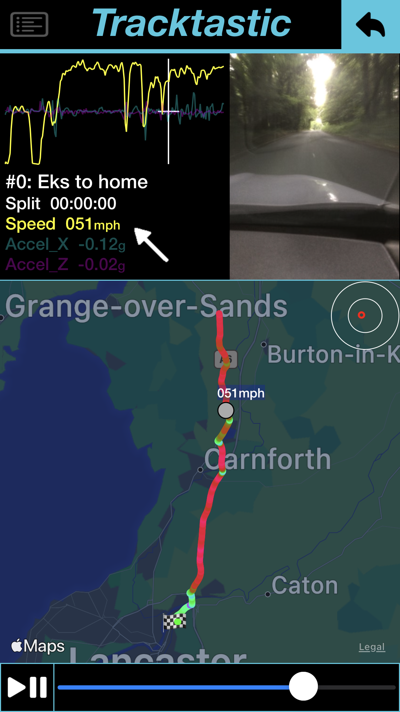
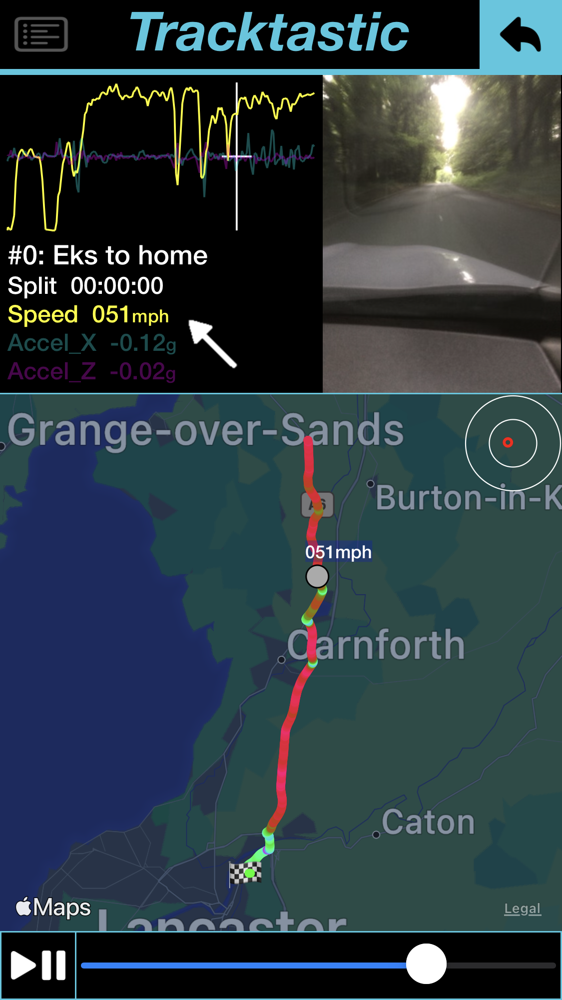

Tracktastic v1.05
This app is designed to record complex motion data in a simple manner and save the data for future playback.
Default configuration is not fully automatic: Green button starts the lap timer, passing the same point( the start line) records any new laps. (set 'Use acceleration for Launch' in settings for fully automatic)
The Best lap is automatically detected and subsequent laps are compared to it for split times.
All recorded data can be replayed, with graphical overlays of speed, acceleration, braking and
cornering
g, and any recorded videos.
Optional videos can be recorded simultaneously with the lap data and replayed or copied to the device's photos library.
Addition settings allow starting laps from specific points (switch accel off in the settings, then you can press the green button to start the lap)
Also when not timing a lap, but have separate start and finish points the blue button can be used to mark the finish point. And again any subsequent ‘stages’ are automatically detected and can be replayed later.
Resolution & refresh rate are both reduced if the device starts to warm up.
Features:
Automatic operation:
Auto start recordings
Auto detect laps
Auto Calc split times
Auto Calc 0-60 & 1/4 mile
Dash cam videos
Replay data & videos
FAQ:
Understanding this apps limitations: This app will wait for a suitable GPS signal before it will allow recording. IOS devices at this time are only able to update the GPS data once every second. This app uses algorithms to predict the speed and location between GPS signals. It is crutial that the GPS data received is as accurate as possible. The GPS signal quality is shown top right. It should be flashing Green for best results.
Starting a session: The app can detect a start event (either launch or rolling start) by pressing the GREEN button, OR (if set in settings) by acceleration. If acceleration is set, the sensitivity can be adjusted for different vehicles. All subsequent laps are saved automatically.
Setting a 'Stage' session: Press the BLUE button when you cross the stage end line. All subsequent stages are recorded automatically.
Ending a session: Pressing the RED button, (or folder button) will give the ending options. Save the session if you wish to review the data later.
Videos: Recording videos is off by default to save device storage space, it can be switched on in the settings. If switched on, and selected, videos can be viewed while recording, but it is not necessary. All videos can be saved (from replay list screen) to the devices 'photos' library.
OverHeat: Using GPS data, Charging, Direct Sunlight, Video Recording - All cause the device to warm up. If the app detects it's getting too warm it will decrease resolution and refresh rates to help. If it continues to overheat, try moving out of direct sunlight, switch off charging - or just give it a rest!!
WIP: This app and these instuctions are a Work In Progress. It is actively being developed. Lots of updates are planned for the future. Send bug reports an/or feature requests to: tracktastic@yahoo.com>